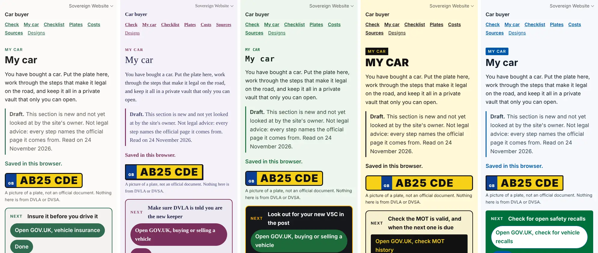
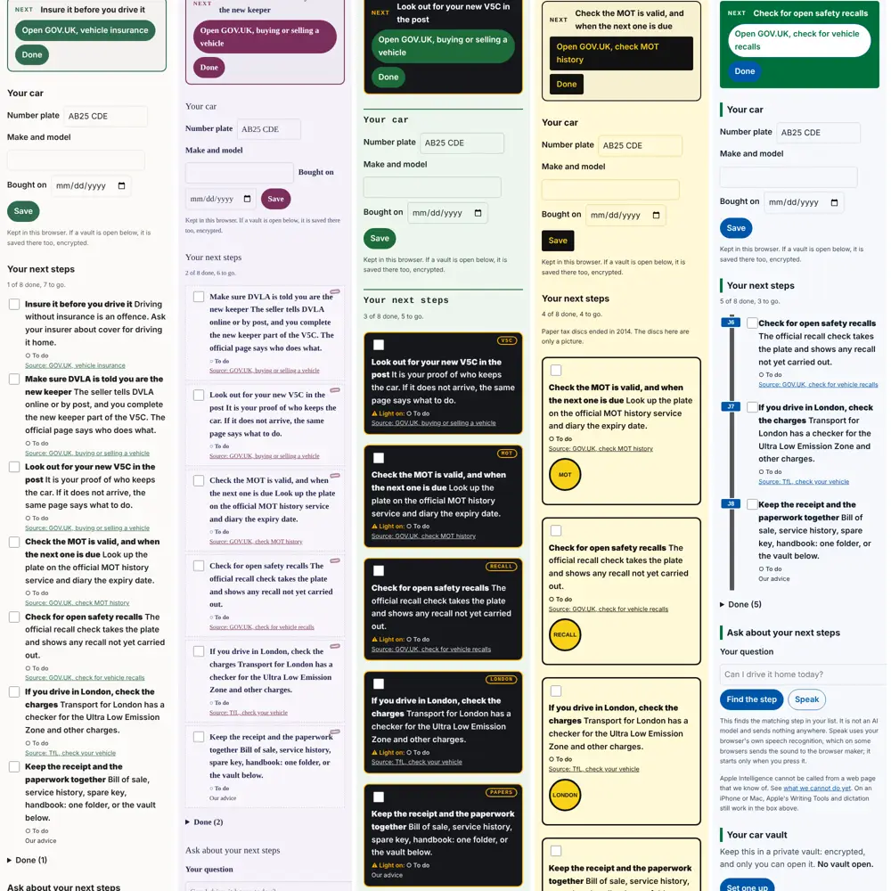

Synthetic users: Car Buyer, round 13 (My car)
Site: https://car-buyer.tool.sovereignweb.site/mycar/ at 226e696 (v0.1.20), My car only, in its five new designs: 1 Forecourt (plain), 2 Service book, 3 Dashboard, 4 Tax disc, 5 Road atlas. The brief. Run: 24 November 2026, about 23:40 UTC, by design.b.rounds, asked by the keeper, b.site.car-buyer, and by design.b. The state: plate AB25 CDE saved, no step done, a clean browser per design. The review.
You have just bought this car: would this get it legal this week?
| Design | Yes | Look |
|---|---|---|
| 1 Forecourt | 4 of 5 | 2.8 |
| 2 Service book | 2 of 5 | 2.0 |
| 3 Dashboard | 4 of 5 | 3.2 |
| 4 Tax disc | 4 of 5 | 3.4 |
| 5 Road atlas | 4 of 5 | 3.8 |
Show a friend: Dashboard 2, Tax disc 1, Road atlas 1, none 1.
A first run was discarded. v0.1.20 went live during it, and my capture carried ticked steps from one design to the next, so the tax step was folded away by design 5. Its top complaint, "no visible tax step", was my set-up, not the site. This run is the clean one.
Method: Synthetic users. One agent played five personas (a first-time buyer of 19, a parent short of time, a car enthusiast, a low-vision reader on a phone, a sceptic who would search GOV.UK) from captures of each design on a phone and desktop, light and dark. Simulations, never a replacement for the measured checks or a real person.
Did the five ideas read?
Below the fold, three clearly. All five personas named Dashboard ("warning lights"), Tax disc ("yellow tax discs") and Road atlas ("a road with junctions") the same way; three of five read Service book (the low-vision reader could not make out the paper clips); Forecourt read as plain, as it should. On the first phone screen, one page in five colours: the same plate, words, draft notice and Next box, differing only in colour, typeface and, in Tax disc, a full-width plate.
In their words
- First-time buyer, Road atlas: "J1 to J8 down a road makes it feel like a trip I'm getting through, one junction at a time."
- Enthusiast, Dashboard: "The only one that looks like someone into cars made it." But "'Light on' for 'PAPERS' is a stretch."
- Low-vision reader, Tax disc, 5 of 5: "black on yellow, thick borders, a plate right across the screen, and buttons that are solid blocks." On every design: "the question box goes off the right edge, so the page slides sideways."
- Parent, Service book: "I can't skim it: each step is one bold block."
- Sceptic, every design: "I'd search GOV.UK myself and skip the middleman."

